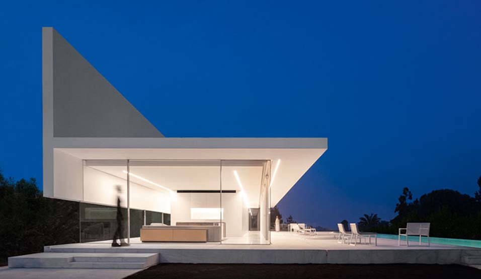
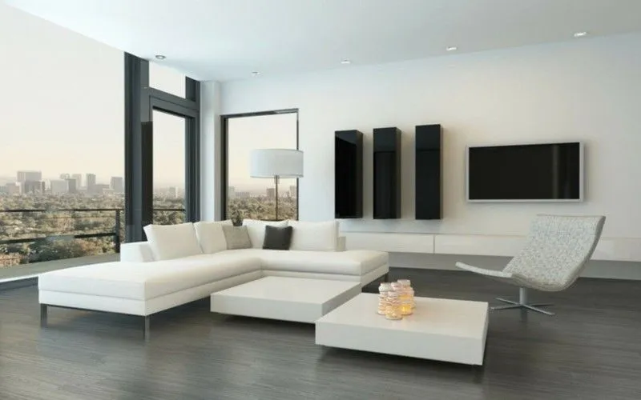
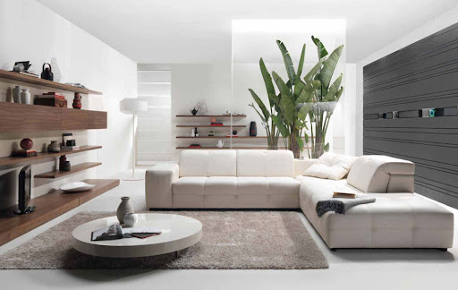

HOME
HISTORIA
OBRAS
ARTISTAS
FORMA DE VIDA
CONTACTO
FORMA DE VIDA
El minimalismo al pasar de los años, se extendió a diferentes disciplinas y pasó las fronteras del arte, estas son algunas de ellas.
ARQUITECTURA

Arquitectura Minimalista
En la arquitectura, el minimalismo tuvo una enorme influencia. Se comenzó a evitar los excesos y a respetar las formas.
Ver mas...
La nueva Arquitectura
La naturalidad de los elementos tomó mucha importancia, dejando de lado los revestimientos.
Ver mas...
DECORACIÓN

Menos es más
En la arquitectura, el minimalismo tuvo una enorme influencia. Se comenzó a evitar los excesos y a respetar las formas.
Ver mas...

El minimalismo en la decoración
La naturalidad de los elementos tomó mucha importancia, dejando de lado los revestimientos.
Ver mas...
MÚSICA